StructSplat — no boundary specialization
26 calibrated 5328×4608 views; fitting uses native-resolution foreground windows.
This is a production conversion and diagnostic comparison, not claim-ready evidence.
compact manifest ·
production manifest
C0001 · 5,576 splats · 31.75 dB
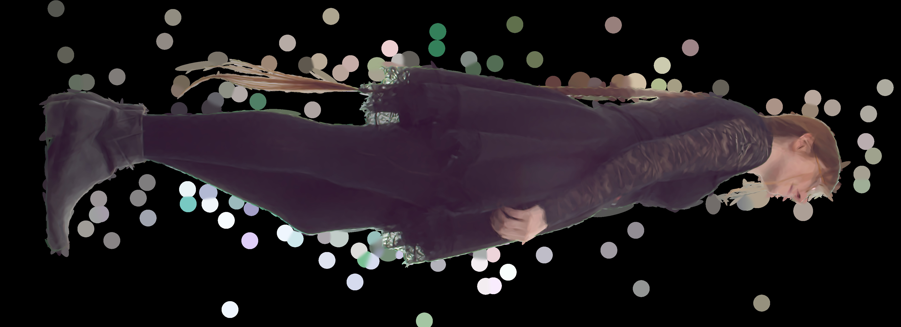
C0004 · 5,016 splats · 25.45 dB
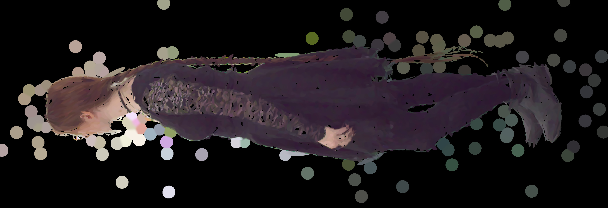
C0005 · 6,776 splats · 29.32 dB
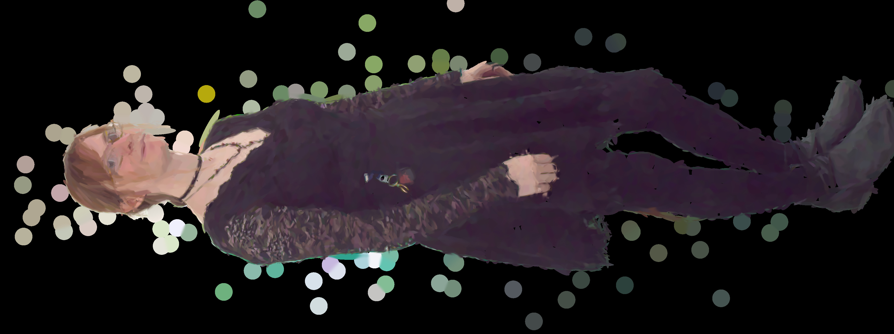
C0006 · 6,344 splats · 29.23 dB
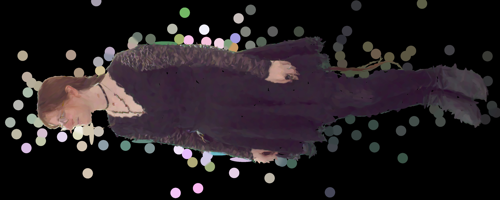
C0008 · 7,928 splats · 33.10 dB
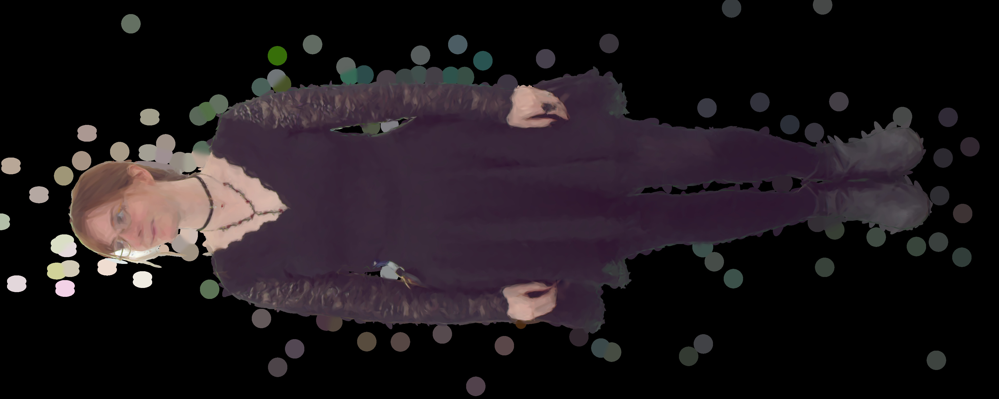
C0009 · 6,936 splats · 32.34 dB
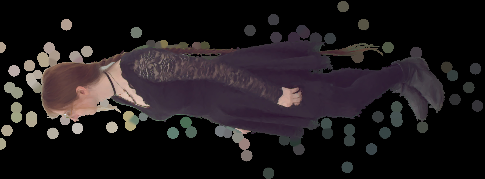
C0012 · 8,528 splats · 31.87 dB
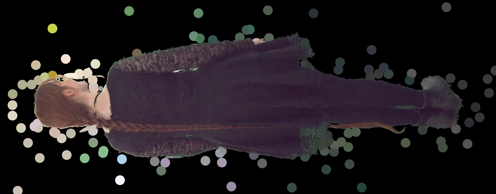
C0014 · 6,224 splats · 33.66 dB
C0018 · 5,064 splats · 27.41 dB
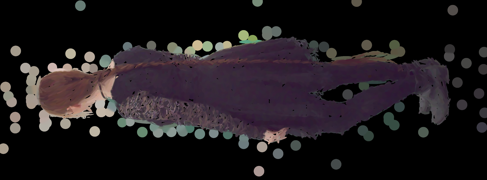
C0019 · 6,096 splats · 33.80 dB
C0020 · 7,344 splats · 30.08 dB
C0021 · 8,440 splats · 30.21 dB
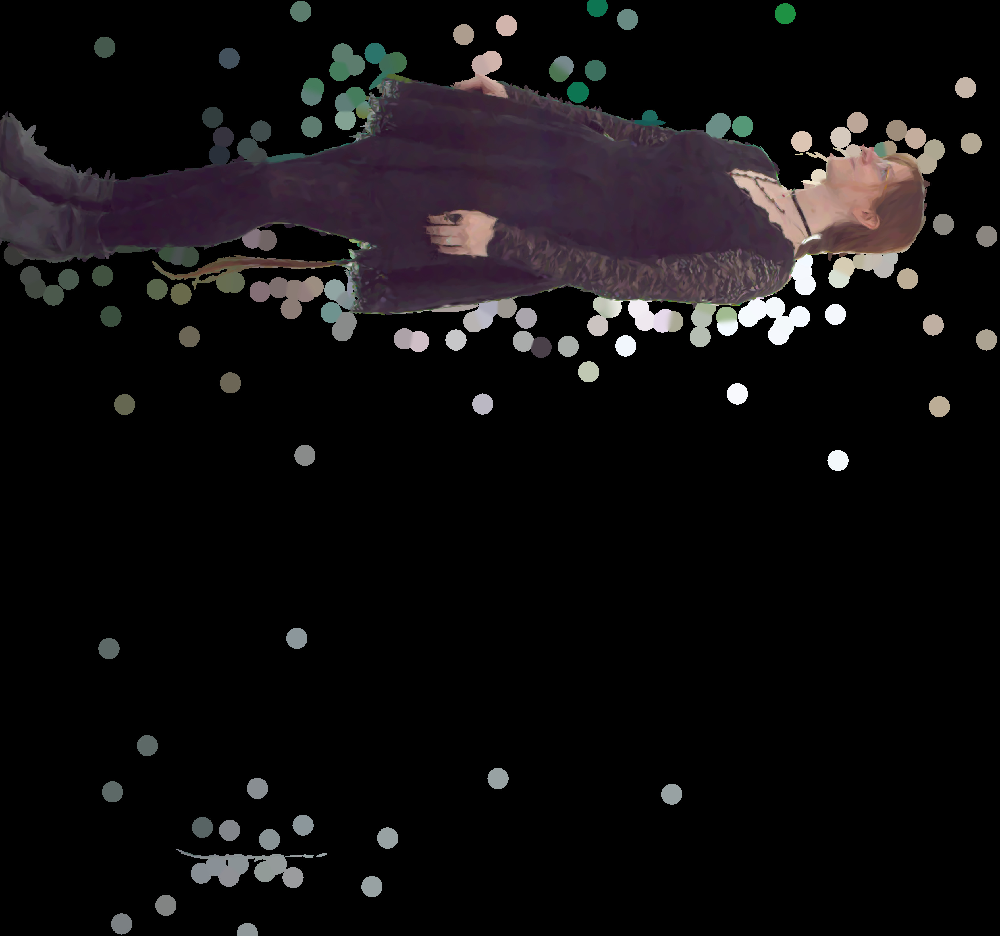
C0022 · 8,064 splats · 30.48 dB
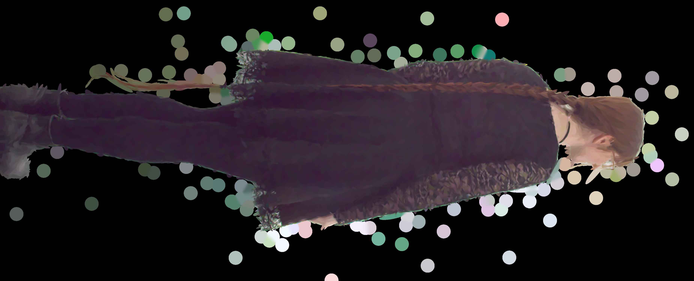
C0025 · 7,800 splats · 33.81 dB
C0026 · 8,592 splats · 30.50 dB
C0028 · 5,864 splats · 32.21 dB
C0029 · 5,080 splats · 32.94 dB
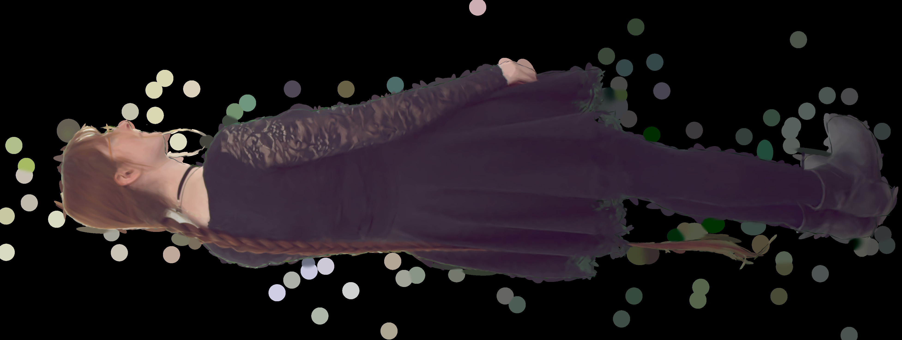
C0030 · 6,712 splats · 32.28 dB
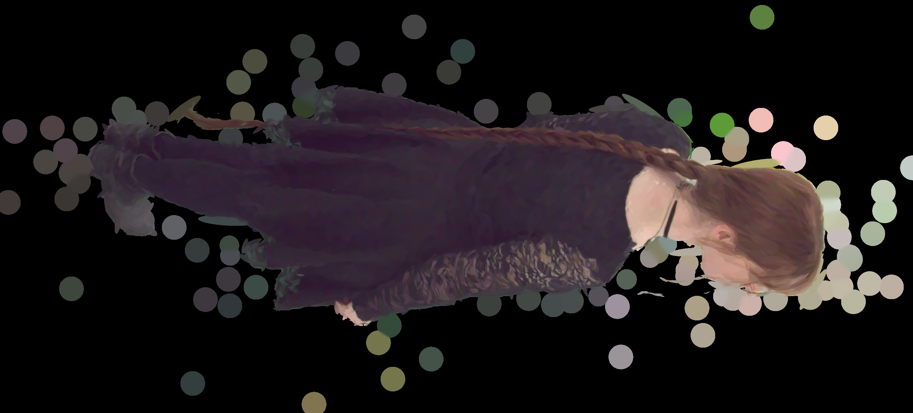
C0031 · 7,440 splats · 31.07 dB
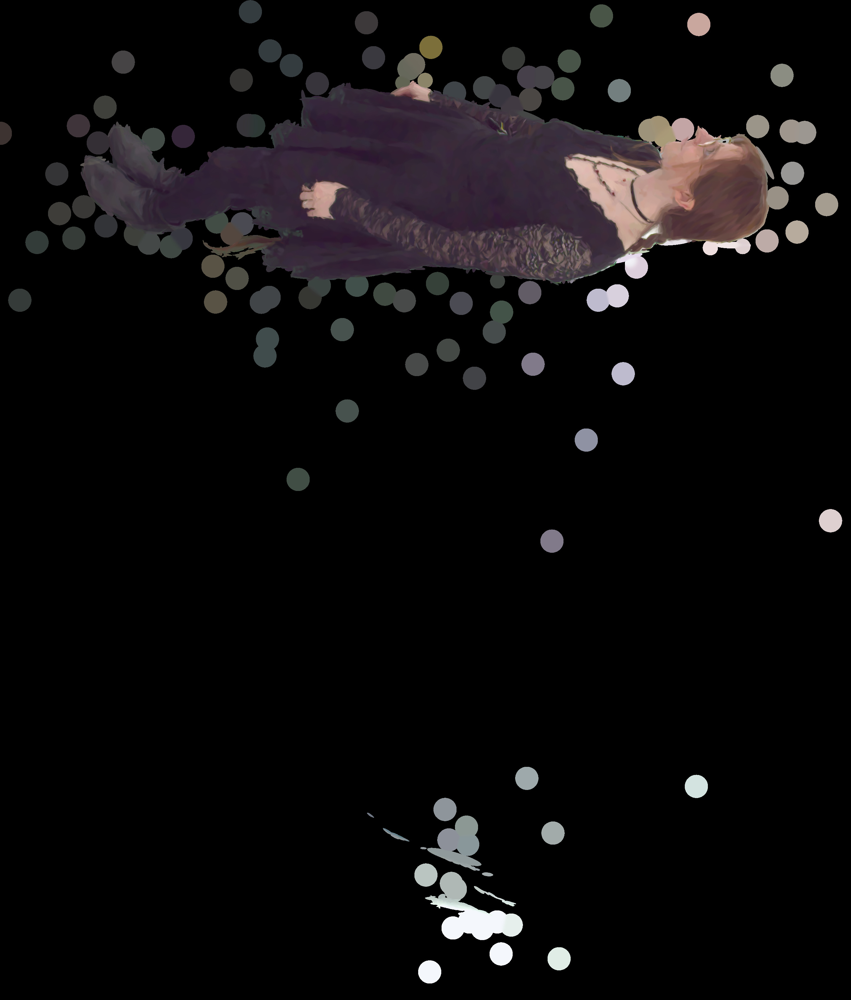
C0034 · 5,152 splats · 32.59 dB
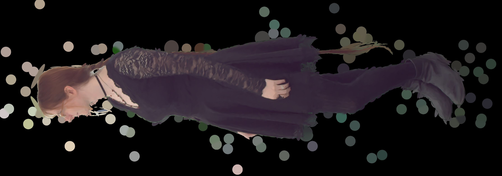
C0037 · 5,000 splats · 24.34 dB
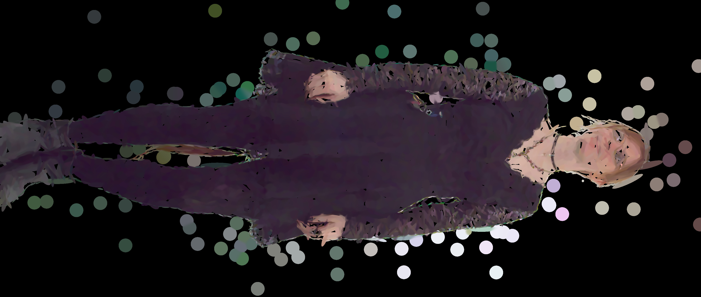
C0039 · 7,824 splats · 32.81 dB
C1000 · 5,328 splats · 25.87 dB
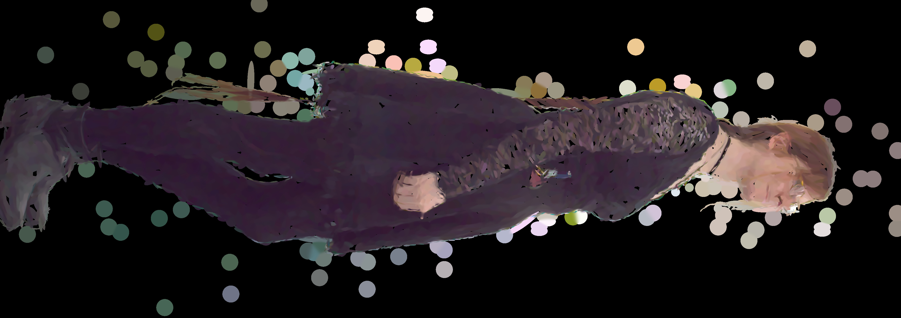
C1001 · 5,008 splats · 24.29 dB
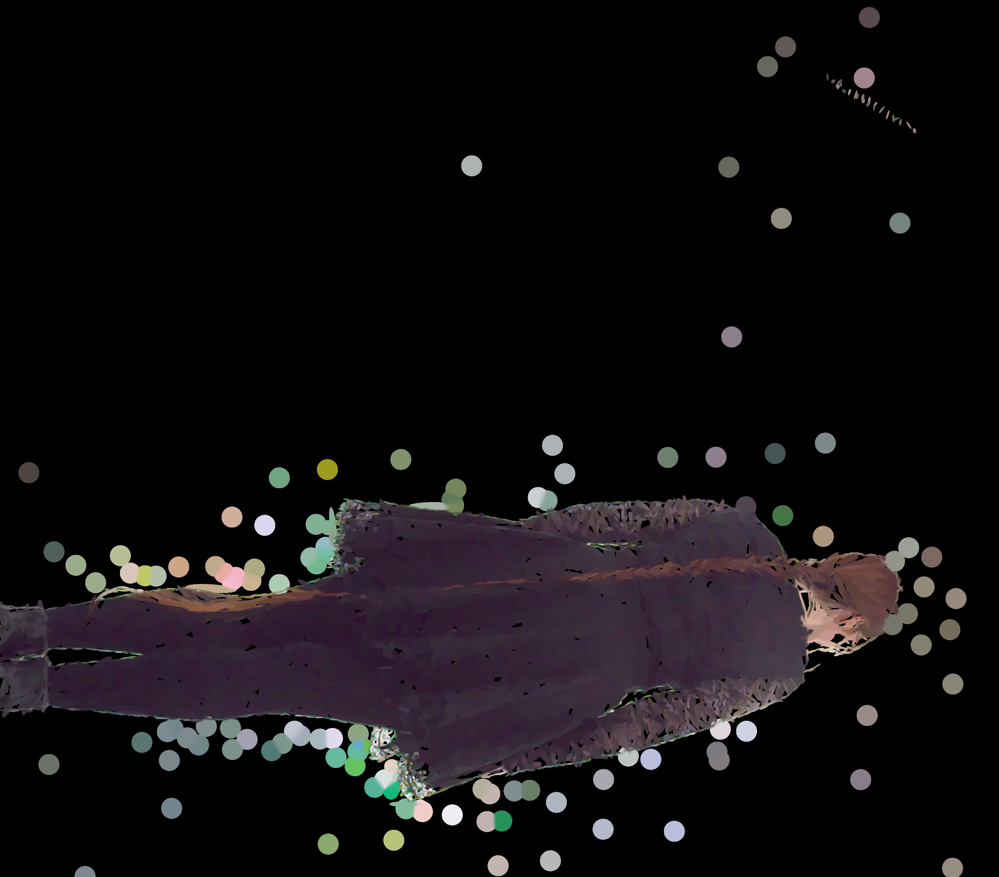
C1002 · 5,080 splats · 28.13 dB
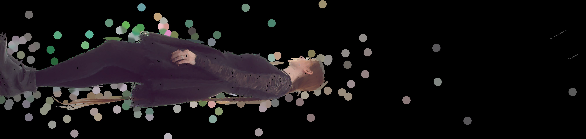
C1004 · 7,920 splats · 30.67 dB